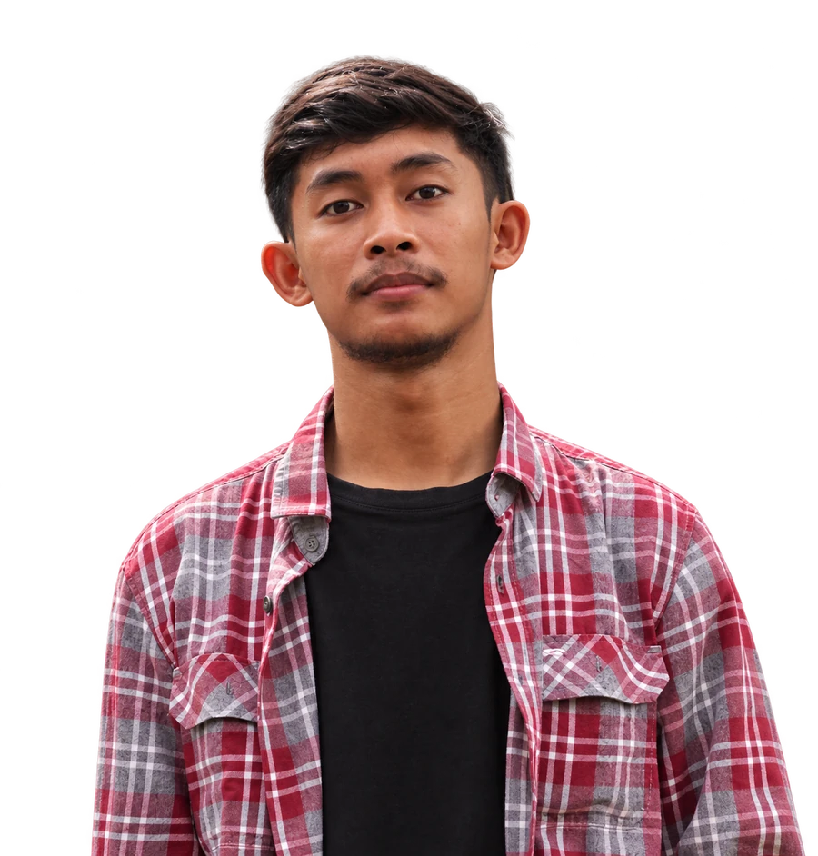

PORTFOLIO PERSONAL2026
Halo, saya
MuhammadIchsanNurdin
Analis operasional, otomasi alur kerja, dan web developer pemula.
Lulusan Teknik Elektro dengan lebih dari tiga tahun di operasional e-commerce Shopee: memimpin tim, menjaga SLA, dan mengotomatiskan pekerjaan harian.
Mencari peran operasional, magang, atau web development tingkat awal.

- 3+Tahun operasional e-commerce
- 4Proyek web mandiri
- 5+Tahun desain grafis freelance
01 / SELECTED WORK
Ide pribadi.
Wujud digital.
Eksplorasi mandiri dari kebutuhan sehari-hari. Buka detail untuk melihat tujuan, pendekatan, dan fitur setiap proyek.
Seluruh proyek merupakan karya pribadi untuk pembelajaran dan eksplorasi. Tidak mewakili atau berafiliasi dengan perusahaan, pemberi kerja, maupun pihak lain.
02 / TENTANG SAYA
Berpikir terstruktur.
Terus bereksplorasi.
03 / PERJALANAN
Pengalaman yang
membentuk cara kerja.
04 / KEMAMPUAN
Bekal untuk
membangun solusi.
05 / LANGKAH BERIKUTNYA
Mari mulai
percakapan.
Terbuka untuk peran operasional, otomasi, dan pengembangan web tingkat junior.